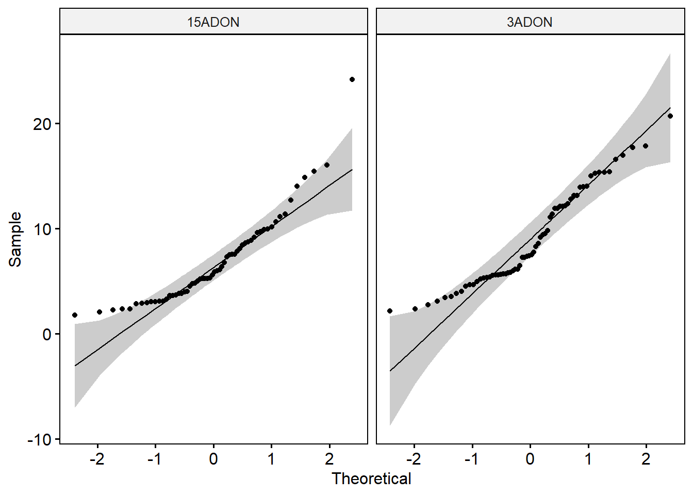
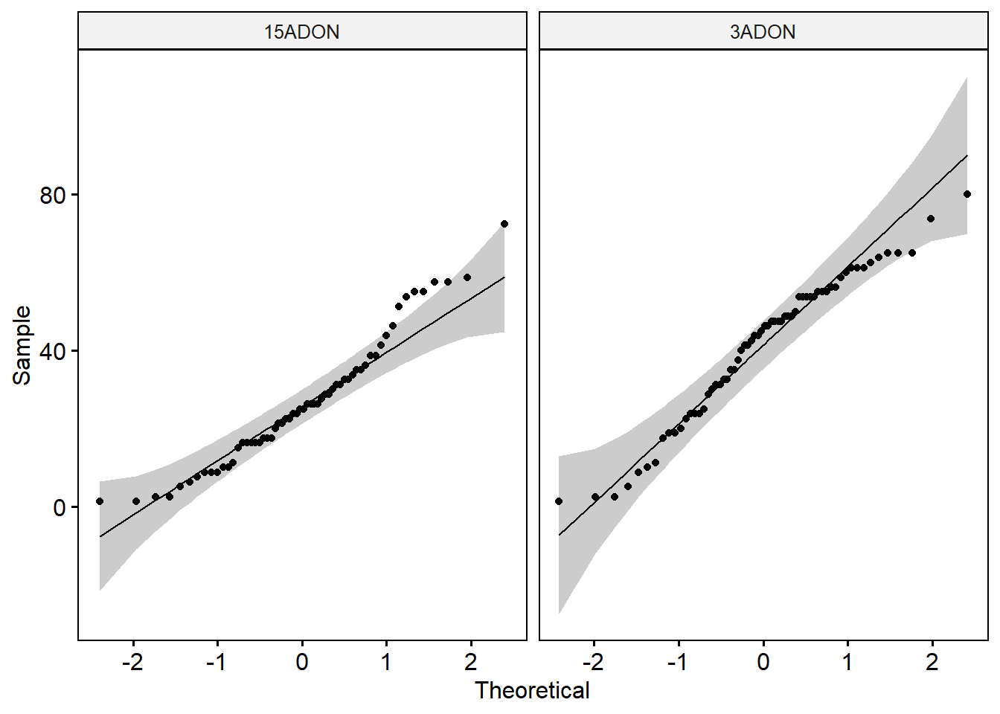
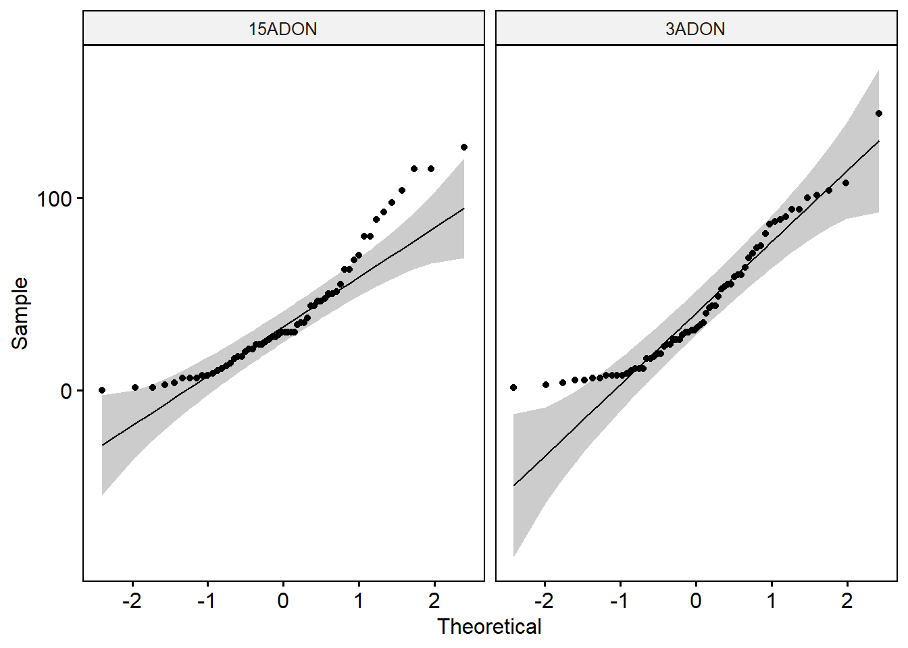
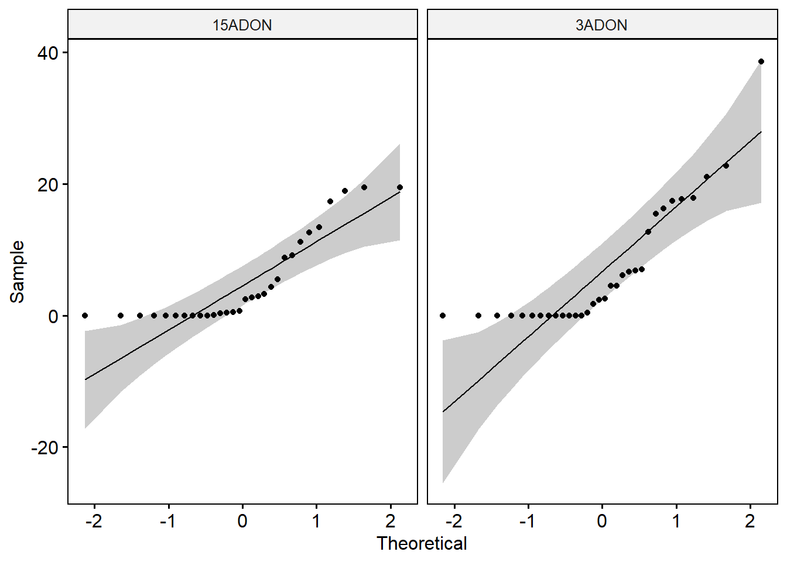
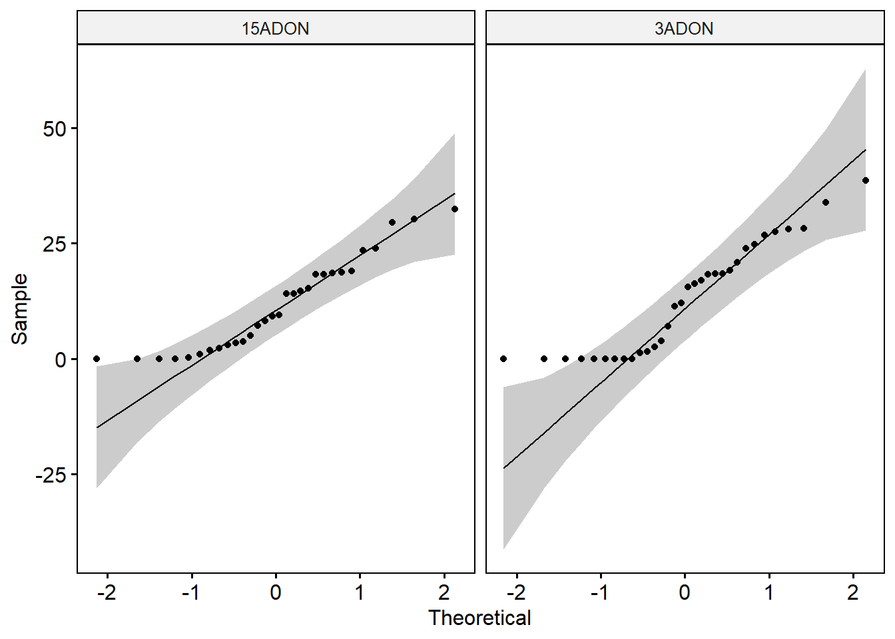
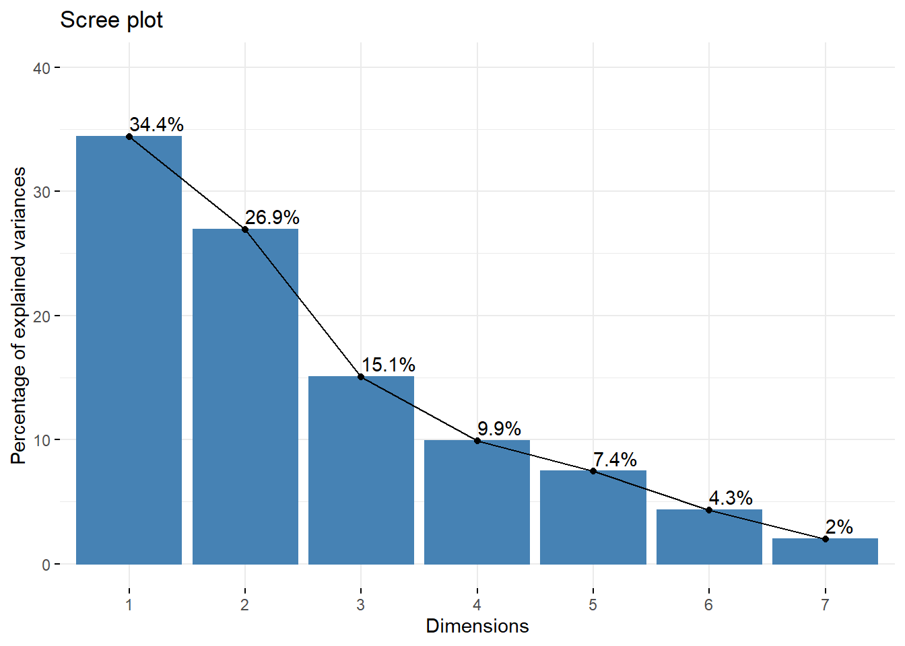
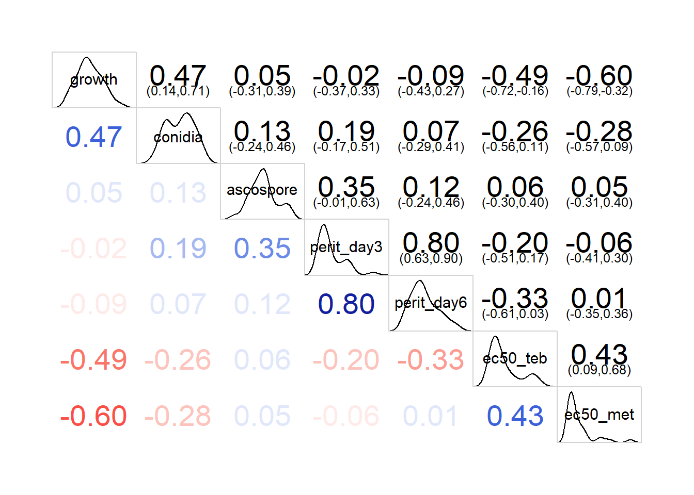
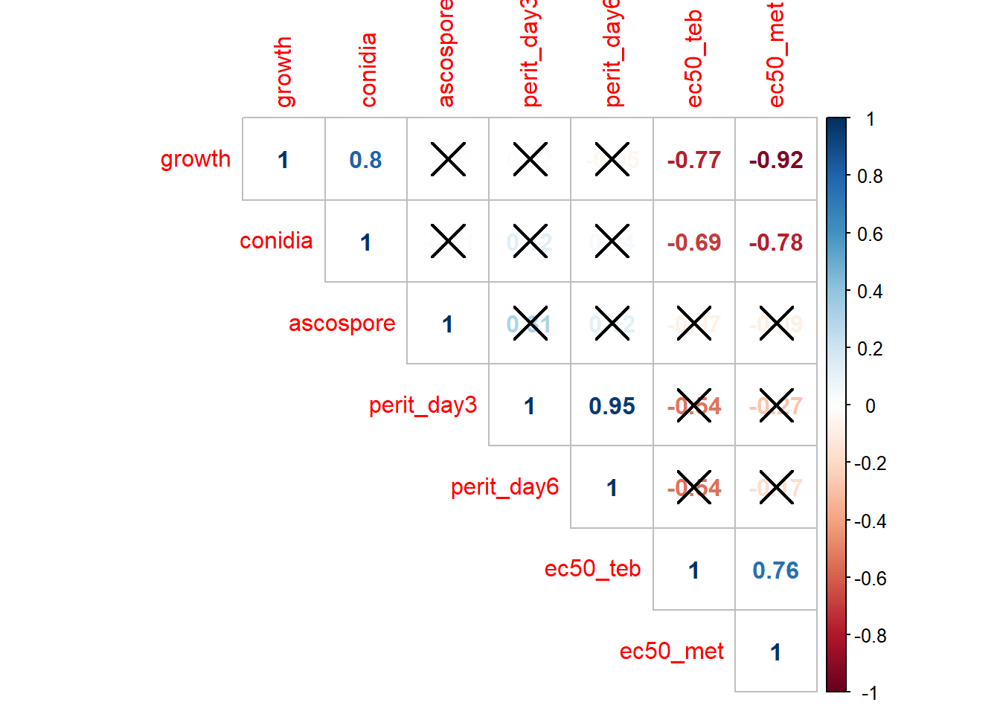

knitr::opts_chunk$set(echo = TRUE, warning = FALSE)library(tidyverse)
library(readxl)
library(agricolae)
library(ggjoy)
library(drc)
library(ggpubr)
library(rstatix)
library(ec50estimator)
library(car)
library(FactoMineR)
library(factoextra)mycelium <- read_excel("data/dat-fitness.xlsx", sheet = "mycelium") # Removing the mycelium plug area
mycelium["day1"] = mycelium["d1_cm"] -0.283
mycelium["day2"] = mycelium["d2_cm"] -0.283
# Estimating the average radial growth rate (cm2 per day)
mycelium$growth <- (mycelium$day2 - mycelium$day1)
# Summarizing the data
mycelium1 <- mycelium %>%
group_by(experiment, isolate, tri, rep) %>% summarize(mgr = mean(growth)) # Summary statistics
mycelium1 %>%
group_by(tri) %>%
get_summary_stats(mgr, type = "mean_sd")# Identify outliers by groups
mycelium1 %>%
group_by(tri) %>%
identify_outliers(mgr) # There were no extreme outliers.# Check normality by groups
mycelium1 %>%
group_by(tri) %>%
shapiro_test(mgr) # Data of the two groups are not normally distributed.ggqqplot(mycelium1, x = "mgr", facet.by = "tri")
# Check the equality of variances
leveneTest(mgr ~ tri, data = mycelium1) # The p-value of the Levene’s test is > 0.05, suggesting that there is no significant difference between the variances of the two groups.
# T-test - compare the mean of two independent groups
t.test(mgr ~ tri, data = mycelium1) ##
## Welch Two Sample t-test
##
## data: mgr by tri
## t = -2.6806, df = 121.94, p-value = 0.008365
## alternative hypothesis: true difference in means is not equal to 0
## 95 percent confidence interval:
## -3.6997297 -0.5565276
## sample estimates:
## mean in group 15ADON mean in group 3ADON
## 6.870317 8.998445conidia <- read_excel("data/dat-fitness.xlsx", sheet = "conidia") conidia1 <- conidia %>%
group_by(experiment, isolate, tri, rep) %>% summarize(spores = mean(conc_spores))# Summary statistics
conidia1 %>%
group_by(tri) %>%
get_summary_stats(spores, type = "mean_sd")# Identify outliers by groups
conidia1 %>%
group_by(tri) %>%
identify_outliers(spores) # There were no extreme outliers.# Check normality by groups
conidia1 %>%
group_by(tri) %>%
shapiro_test(spores) # Data of the two groups are not normally distributed.ggqqplot(conidia1, x = "spores", facet.by = "tri")
# Check the equality of variances
leveneTest(spores ~ tri, data = conidia1) # The p-value of the Levene’s test is > 0.05, suggesting that there is no significant difference between the variances of the two groups.
# T-test - compare the mean of two independent groups
t.test(spores ~ tri, data = conidia1) ##
## Welch Two Sample t-test
##
## data: spores by tri
## t = -4.5524, df = 121.44, p-value = 1.269e-05
## alternative hypothesis: true difference in means is not equal to 0
## 95 percent confidence interval:
## -20.792473 -8.189297
## sample estimates:
## mean in group 15ADON mean in group 3ADON
## 26.58333 41.07422ascospore <- read_excel("data/dat-fitness.xlsx", sheet = "ascospore") ascospore1 <- ascospore %>%
group_by(experiment, isolate, tri, location, region, crop, rep) %>% summarize(ascospore = mean(conc_spores)) # Summary statistics
ascospore1 %>%
group_by(tri) %>%
get_summary_stats(ascospore, type = "mean_sd")# Identify outliers by groups
ascospore1 %>%
group_by(tri) %>%
identify_outliers(ascospore) # There were no extreme outliers.# Check normality by groups
ascospore1 %>%
group_by(tri) %>%
shapiro_test(ascospore) # Data of the two groups are not normally distributed.ggqqplot(ascospore1, x = "ascospore", facet.by = "tri")
# Check the equality of variances
leveneTest(ascospore ~ tri, data = ascospore1) # The p-value of the Levene’s test is > 0.05, suggesting that there is no significant difference between the variances of the two groups.
# T-test - compare the mean of two independent groups
t.test(ascospore ~ tri, data = ascospore1) ##
## Welch Two Sample t-test
##
## data: ascospore by tri
## t = -0.76025, df = 122, p-value = 0.4486
## alternative hypothesis: true difference in means is not equal to 0
## 95 percent confidence interval:
## -16.123628 7.175712
## sample estimates:
## mean in group 15ADON mean in group 3ADON
## 38.41667 42.89062peritecia <- read_excel("data/dat-fitness.xlsx", sheet = "perithecia")peritecia1 = peritecia %>%
gather("Day 3", "Day 6", key = day, value = percentage) %>%
arrange(isolate)################################# DAY 3 ####################################
day3 <- peritecia1 %>%
filter(day == "Day 3")
# Summary statistics
day3 %>%
group_by(tri) %>%
get_summary_stats(percentage, type = "mean_sd")day_3_summary <- day3 %>%
group_by(tri, isolate) %>%
get_summary_stats(percentage, type = "mean_sd")
# Identify outliers by groups
day3 %>%
group_by(tri) %>%
identify_outliers(percentage) # The 18SG178iii is an extreme outlier.# Check normality by groups
day3 %>%
group_by(tri) %>%
shapiro_test(percentage) # Data of the two groups are not normally distributed.ggqqplot(day3, x = "percentage", facet.by = "tri")
# Check the equality of variances
leveneTest(percentage ~ tri, data = day3) # The p-value of the Levene’s test is > 0.05, suggesting that there is no significant difference between the variances of the two groups.
# T-test - compare the mean of two independent groups - With outlier
t.test(percentage ~ tri, data = day3) ##
## Welch Two Sample t-test
##
## data: percentage by tri
## t = -0.88798, df = 56.423, p-value = 0.3783
## alternative hypothesis: true difference in means is not equal to 0
## 95 percent confidence interval:
## -5.991568 2.310760
## sample estimates:
## mean in group 15ADON mean in group 3ADON
## 5.111562 6.951966################################# DAY 6 ####################################
day6 <- peritecia1 %>%
filter(day == "Day 6")
# Summary statistics
day6 %>%
group_by(tri) %>%
get_summary_stats(percentage, type = "mean_sd")# Identify outliers by groups
day6 %>%
group_by(tri) %>%
identify_outliers(percentage) # There were no extreme outliers.day_6_summary <- day6 %>%
group_by(tri, isolate) %>%
get_summary_stats(percentage, type = "mean_sd")
# Check normality by groups
day6 %>%
group_by(tri) %>%
shapiro_test(percentage) # Data of the two groups are not normally distributed.ggqqplot(day6, x = "percentage", facet.by = "tri")
# Check the equality of variances
leveneTest(percentage ~ tri, data = day6) # The p-value of the Levene’s test is > 0.05, suggesting that there is no significant difference between the variances of the two groups.
# T-test - compare the mean of two independent groups - With outlier
t.test(percentage ~ tri, data = day6) ##
## Welch Two Sample t-test
##
## data: percentage by tri
## t = -0.53071, df = 59.261, p-value = 0.5976
## alternative hypothesis: true difference in means is not equal to 0
## 95 percent confidence interval:
## -7.095219 4.120332
## sample estimates:
## mean in group 15ADON mean in group 3ADON
## 11.48950 12.97695#### Compare two evaluation days
t.test(percentage ~ day, data = peritecia1)##
## Welch Two Sample t-test
##
## data: percentage by day
## t = -3.5464, df = 112.83, p-value = 0.0005699
## alternative hypothesis: true difference in means is not equal to 0
## 95 percent confidence interval:
## -9.657044 -2.734491
## sample estimates:
## mean in group Day 3 mean in group Day 6
## 6.061448 12.257215fungicide <- read_excel("data/dat-fitness.xlsx", sheet = "fungicide")fungicide1 <- fungicide %>%
mutate(day1 = d1-6,
day2 = d2-6,
mgr = day2-day1) %>%
group_by(experiment, fungicide, isolate, tri, dose, rep) %>%
summarize(mgr = mean(mgr)) ec50 = estimate_EC50(mgr~dose,
data =fungicide1,
isolate_col = "isolate",
strata_col = c("tri","fungicide"),
interval = "delta",
fct = LL.4())
ec50 <- ec50 %>%
rename(
isolate = ID)
## Export data
write.csv(ec50, file = "data/ec50.csv")## Tebuconazole
ec50_teb <- ec50 %>%
filter(fungicide =="Tebuconazole")
ec50_teb %>%
get_summary_stats(Estimate, type = "full")## 3ADON genotype
teb_3adon <- ec50_teb %>%
filter(tri == "3ADON")
## 15ADON
teb_15adon <- ec50_teb %>%
filter(tri == "15ADON")
## Kolmogorov-Smornov test
#H0 = equal distribution
#H1 = different distributions
ks.test(teb_3adon$Estimate, teb_15adon$Estimate, alternative = "two.side")##
## Two-sample Kolmogorov-Smirnov test
##
## data: teb_3adon$Estimate and teb_15adon$Estimate
## D = 0.2, p-value = 0.8469
## alternative hypothesis: two-sided## Metconazole
ec50_met <- ec50 %>%
filter(fungicide =="Metconazole")
ec50_met %>%
get_summary_stats(Estimate, type = "full")## 3ADON genotype
met_3adon <- ec50_met %>%
filter(tri == "3ADON")
## 15ADON
met_15adon <- ec50_met %>%
filter(tri == "15ADON")
## Kolmogorov-Smornov test
#H0 = equal distribution
#H1 = different distributions
ks.test(met_3adon$Estimate, met_15adon$Estimate, alternative = "two.side")##
## Two-sample Kolmogorov-Smirnov test
##
## data: met_3adon$Estimate and met_15adon$Estimate
## D = 0.27917, p-value = 0.4979
## alternative hypothesis: two-sided## Compare the two fungicides estimates
ks.test(ec50_teb$Estimate, ec50_met$Estimate, alternative = "two.side")##
## Two-sample Kolmogorov-Smirnov test
##
## data: ec50_teb$Estimate and ec50_met$Estimate
## D = 0.70968, p-value = 8.717e-08
## alternative hypothesis: two-sideddat1_mycelium <- mycelium1 %>%
group_by(isolate, tri) %>%
summarise(growth = mean(mgr))
dat1_macroconidia <- conidia1 %>%
group_by(isolate, tri) %>%
summarise(conidia = mean(spores))
dat1_ascospore <- ascospore1 %>%
group_by(isolate, tri) %>%
summarise(ascospore = mean(ascospore))
dat1_perith_1 <- peritecia1 %>%
filter(day == "Day 3") %>%
group_by(isolate, tri) %>%
summarise(perit_day3 = mean(percentage))
dat1_perith_2 <- peritecia1 %>%
filter(day == "Day 6") %>%
group_by(isolate, tri) %>%
summarise(perit_day6 = mean(percentage))
dat1_ec50_teb <- ec50_teb %>%
group_by(isolate, tri) %>%
summarise(ec50_teb = mean(Estimate))
dat1_ec50_met <- ec50_met %>%
group_by(isolate, tri) %>%
summarise(ec50_met = mean(Estimate))
dat_multivar <- dat1_mycelium %>%
left_join(., dat1_macroconidia) %>%
left_join(., dat1_ascospore) %>%
left_join(., dat1_perith_1) %>%
left_join(., dat1_perith_2) %>%
left_join(., dat1_ec50_teb) %>%
left_join(.,dat1_ec50_met) %>%
ungroup()
## Export data
write.csv(dat_multivar, file = "data/dat_multivar.csv")model <- lm(cbind(growth, conidia, ascospore, perit_day3, perit_day6, ec50_teb, ec50_met) ~ tri, dat_multivar)
Manova(model, test.statistic = "Pillai")##
## Type II MANOVA Tests: Pillai test statistic
## Df test stat approx F num Df den Df Pr(>F)
## tri 1 0.30396 1.4349 7 23 0.2396Manova(model, test.statistic = "Wilks")##
## Type II MANOVA Tests: Wilks test statistic
## Df test stat approx F num Df den Df Pr(>F)
## tri 1 0.69604 1.4349 7 23 0.2396Manova(model, test.statistic = "Hotelling")##
## Type II MANOVA Tests: Hotelling-Lawley test statistic
## Df test stat approx F num Df den Df Pr(>F)
## tri 1 0.4367 1.4349 7 23 0.2396Manova(model, test.statistic = "Roy")##
## Type II MANOVA Tests: Roy test statistic
## Df test stat approx F num Df den Df Pr(>F)
## tri 1 0.4367 1.4349 7 23 0.2396#There was no statistically significant difference between the trichothecene genotype on the combined dependent variables# Selecting only the dependent variables
dat_multivar_pca <- dat_multivar %>%
select(-isolate) %>%
select(-tri)
res.pca <- PCA(dat_multivar_pca, graph = FALSE)
# Eigenvalues / Variances
## The eigenvalues measure the amount of variation retained by each principal component.
## Eigenvalues are large for the first PCs and small for the subsequent PCs.
eig.val <- get_eigenvalue(res.pca)
eig.val## eigenvalue variance.percent cumulative.variance.percent
## Dim.1 2.4090008 34.414297 34.41430
## Dim.2 1.8844863 26.921234 61.33553
## Dim.3 1.0536299 15.051856 76.38739
## Dim.4 0.6938712 9.912446 86.29983
## Dim.5 0.5200377 7.429110 93.72894
## Dim.6 0.3014224 4.306034 98.03498
## Dim.7 0.1375516 1.965023 100.00000fviz_eig(res.pca, addlabels = TRUE, ylim = c(0, 40))
## From the plot below, we might want to stop at the fourth principal component. > 85% of the information (variances) contained in the data are retained by the first four principal components.var <- get_pca_var(res.pca)
var## Principal Component Analysis Results for variables
## ===================================================
## Name Description
## 1 "$coord" "Coordinates for the variables"
## 2 "$cor" "Correlations between variables and dimensions"
## 3 "$cos2" "Cos2 for the variables"
## 4 "$contrib" "contributions of the variables"# Contributions to the principal components
var$contrib #contains the contributions (in percentage) of the variables to the principal components. The contribution of a variable (var) to a given principal component is (in percentage) : (var.cos2 * 100) / (total cos2 of the component).## Dim.1 Dim.2 Dim.3 Dim.4 Dim.5
## growth 21.406780 14.3958781 2.07225367 0.75395560 0.543175499
## conidia 15.818742 1.3121030 14.72988899 59.75897073 0.008308026
## ascospore 1.535699 8.6254408 58.06039264 21.71538213 5.331931417
## perit_day3 11.026960 32.9868622 0.00091942 0.09284318 8.297593408
## perit_day6 8.970170 31.9145674 10.32657301 0.51746569 0.164016446
## ec50_teb 22.749976 0.6494999 14.04164047 2.62171470 45.421428954
## ec50_met 18.491673 10.1156486 0.76833181 14.53966797 40.233546249# The larger the value of the contribution, the more the variable contributes to the component.library(corrgram)
library(corrplot)
corr <- dat_multivar %>%
select(-tri) %>%
select(-isolate)
corr1 <- corr %>%
corrgram(lower.panel=panel.cor, upper.panel=panel.conf,
diag.panel=panel.density)
M <- cor(corr1, use = "pairwise.complete.obs")
M## growth conidia ascospore perit_day3 perit_day6
## growth 1.000000000 0.80192864 -0.005083957 0.01885134 -0.04501214
## conidia 0.801928636 1.00000000 -0.011643525 0.12332691 0.03804357
## ascospore -0.005083957 -0.01164352 1.000000000 0.30566892 0.11508080
## perit_day3 0.018851338 0.12332691 0.305668924 1.00000000 0.95036899
## perit_day6 -0.045012140 0.03804357 0.115080801 0.95036899 1.00000000
## ec50_teb -0.773044863 -0.69325849 -0.072240589 -0.53633315 -0.54384821
## ec50_met -0.922332558 -0.77532212 -0.087381152 -0.27159143 -0.17036535
## ec50_teb ec50_met
## growth -0.77304486 -0.92233256
## conidia -0.69325849 -0.77532212
## ascospore -0.07224059 -0.08738115
## perit_day3 -0.53633315 -0.27159143
## perit_day6 -0.54384821 -0.17036535
## ec50_teb 1.00000000 0.75953572
## ec50_met 0.75953572 1.00000000## Combining correlogram with the significance test
# mat : is a matrix of data
# ... : further arguments to pass to the native R cor.test function
cor.mtest <- function(mat, ...) {
mat <- as.matrix(mat)
n <- ncol(mat)
p.mat<- matrix(NA, n, n)
diag(p.mat) <- 0
for (i in 1:(n - 1)) {
for (j in (i + 1):n) {
tmp <- cor.test(mat[, i], mat[, j], ...)
p.mat[i, j] <- p.mat[j, i] <- tmp$p.value
}
}
colnames(p.mat) <- rownames(p.mat) <- colnames(mat)
p.mat
}
# matrix of the p-value of the correlation
p.mat <- cor.mtest(M)
corrplot(M, method = "number", type = "upper", p.mat = p.mat, sig.level = 0.01#, insig = "blank"
)
col <- colorRampPalette(c("#BB4444", "#EE9988", "#FFFFFF", "#77AADD", "#4477AA"))
png(height=2000, width=2500, file="figures/corr1.png", res = 300)
corrplot(M, method="color", col=col(200),
type="upper", #order="hclust",
is.corr = T,
addCoef.col = "black", # Add coefficient of correlation
tl.col="black", tl.srt=45, #Text label color and rotation
# Combine with significance
p.mat = p.mat, sig.level = 0.05, insig = "blank",
# hide correlation coefficient on the principal diagonal
diag=FALSE)
dev.off()## png
## 2